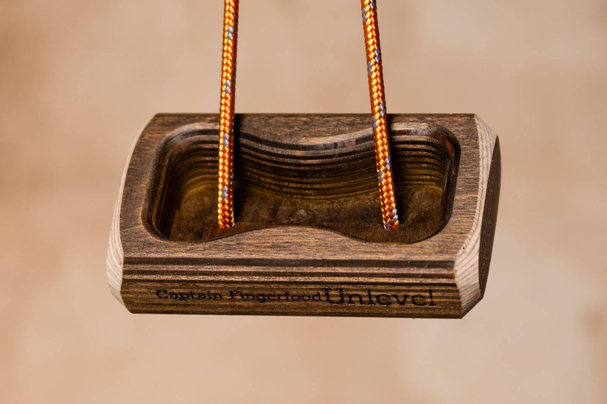
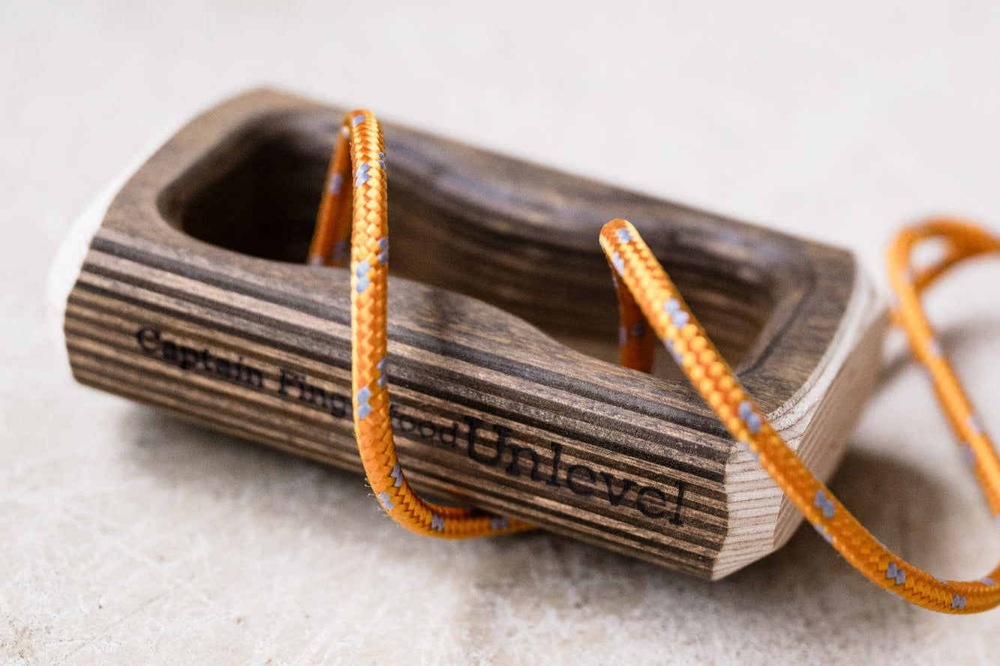
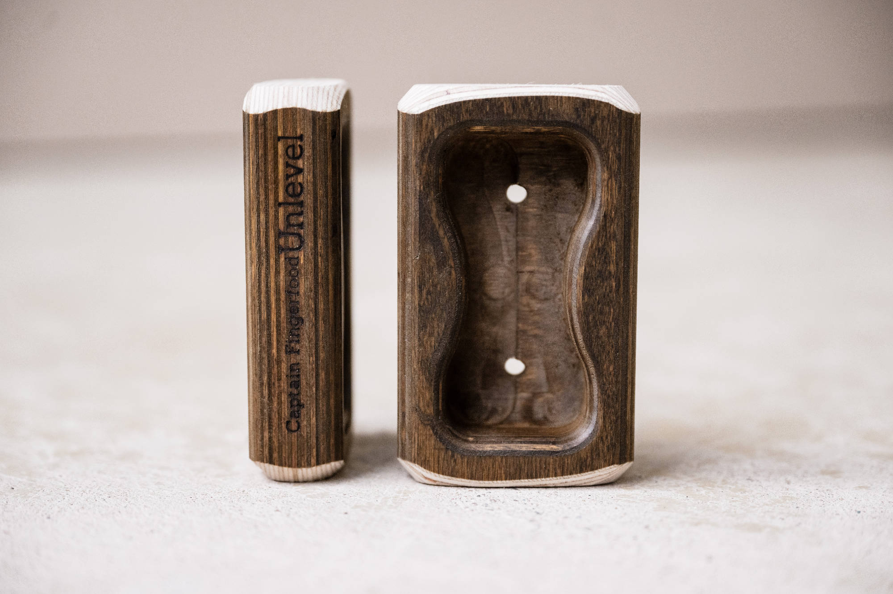

2. captain-fingerfood-unlevel-title.jpg


exact-revision title image
SHA-256 7eb711b6b28284a86835b7a460559f5ec80f9816bc691e2823982d98e1b0d813
historical cord evidence; new full visual set approved by user 2026-09-29
P1 shows the curved opposing lips, common cavity and two exterior strands; P2 shows the end profile, full cavity and two daylight floor openings. Floor-to-back voids are visually supported; a complete continuous threading graph is not established. Preserve four existing physical contact IDs.
Source packet; approved by user 2026-09-29. No CAD geometry authored.

exact-revision title image
SHA-256 7eb711b6b28284a86835b7a460559f5ec80f9816bc691e2823982d98e1b0d813
historical cord evidence; new full visual set approved by user 2026-09-29

P1 shows the curved opposing lips, common cavity and two exterior strands; P2 shows the end profile, full cavity and two daylight floor openings. Floor-to-back voids are visually supported; a complete continuous threading graph is not established. Preserve four existing physical contact IDs.
SHA-256 ad5f5ace4d71475fb9b8f546d52bc63305868953898baf7aef67e966a571475f
approved by user 2026-09-29

P1 shows the curved opposing lips, common cavity and two exterior strands; P2 shows the end profile, full cavity and two daylight floor openings. Floor-to-back voids are visually supported; a complete continuous threading graph is not established. Preserve four existing physical contact IDs.
SHA-256 75432a1c60bb6f2c735107551b52fff94fde6f2ae2f0a34a96b90c300ee416e9
approved by user 2026-09-29